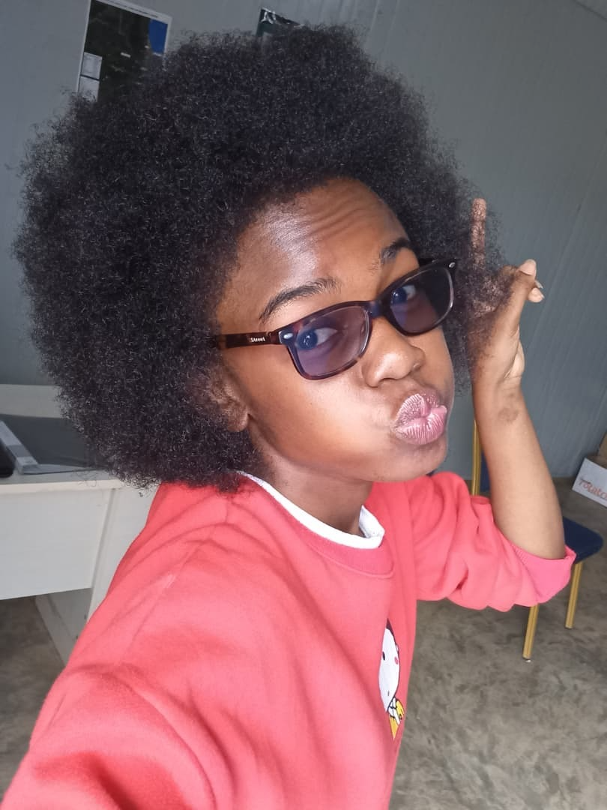

Ethel Phiri
M.S. Student, Biomedical Science and Engineering
Gwangju Institute of Science and Technology (GIST)
Department of Biomedical Science and Engineering
Research Interests
- Biomedical Science & Engineering
- Neurophotonics and Biomedical Imaging
- Image Processing & Quantitative Analysis
- Data-driven approaches for biological signals
Education
- M.S., Biomedical Science and Engineering, GIST
- B.S., Biomedical Engineering, Malawi University of Science and Technology